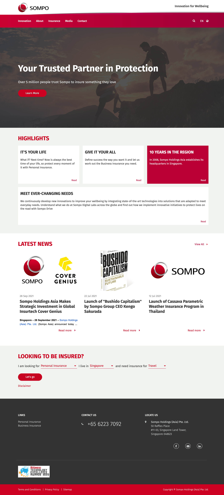
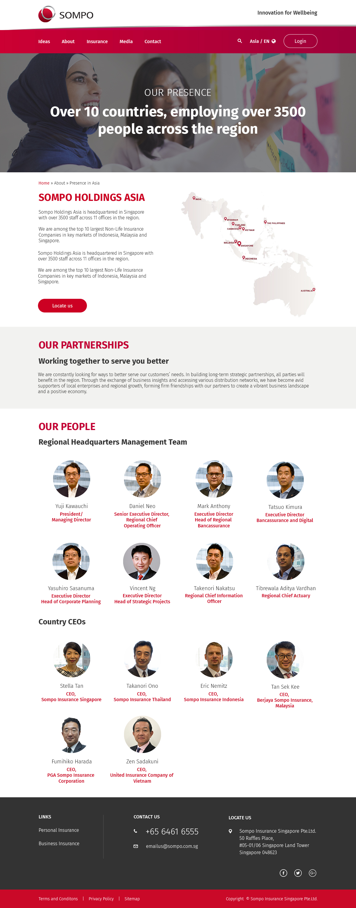
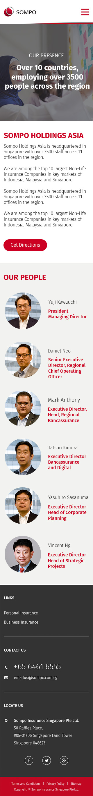

Clarify the content hierarchy
Designed page structures that make regional information, news, insurance paths, and people directories easier to scan.
Designing a responsive regional website that made information easier to navigate and aligned it with a refreshed brand.
I designed the UI for a full Sompo Asia website revamp, creating a more current brand expression and a clearer information experience for investors and people learning about the regional organization.
The existing site no longer matched the company’s branding and its information architecture made key content harder to navigate. I worked with Sompo representatives, an in-house project manager, and developers to shape the UI across the full website.
Designed page structures that make regional information, news, insurance paths, and people directories easier to scan.
Applied the updated visual direction across layouts, calls to action, cards, navigation, and information-heavy templates.
Created responsive desktop and mobile UI, plus empty and no-results states, prototypes, flows, and production-ready specifications.
The complete website shipped after a two-month project. The final system supports long-form corporate content while keeping navigation and important actions clear on desktop and mobile.
Key page concepts show how the navigation and regional presence scale from wide screens to a focused mobile reading experience.



A shipped regional website with a more consistent brand expression, a clearer information hierarchy, and responsive designs for the full experience.